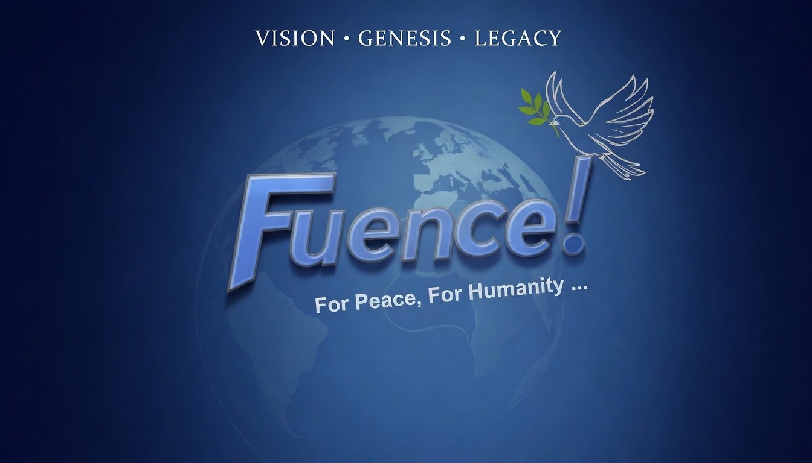

Bangladesh: Sovereignty, Dissent & Democratic Futures
Documenting political conditions, civil society suppression, and international accountability pathways in Bangladesh — backed by evidence and field research.
Fuence is an independent research center producing evidence-based analysis on geopolitics, sovereignty struggles, and the forces reshaping global order — with a commitment to democratic accountability and human dignity.

For Peace, For Humanity …
Vision · Genesis · Legacy
Every series follows a rigorous three-stage process — from evidence collection to international advocacy.
We collect data, compile evidence, and build dossiers on complex geopolitical situations — sourced from international records, field research, and expert input.
See Publications →Our research produces reports, op-eds, and policy briefs — translated into podcast episodes and multimedia content for global audiences.
Explore Series →From international petitions to diplomatic outreach, we connect research to action — amplifying voices that global institutions often ignore.
Join Community →Documenting political conditions, civil society suppression, and international accountability pathways in Bangladesh — backed by evidence and field research.
Examining India's strategic role in South and Southeast Asia as a democratic counterbalance to China's expanding influence — alliances, economics, and the decade ahead.
A clear-eyed explainer on JEI: its 1971 war crimes, its 2.4 million members, its state infiltration, its international sponsors, and why India must understand it as a direct threat.
The structural parallel between Ukraine and Bangladesh: how a reliable partner was turned into a threat platform through a coordinated international operation — and what India must do while the window is open.
Commodore Farooq's statement on PNS Hangul, the $4–5B Chinese submarine programme, and why Bangladesh's diplomatic realignment is the missing piece of Pakistan's Bay of Bengal ambitions.
Read our research and subscribe for updates on the platforms you already use.
Fuence accepts no funding that compromises editorial independence. Every contribution directly supports research, production, and advocacy.
Buy us a coffee, become a Patron, or support on Ko-fi. Every contribution keeps this work independent.
Become a Patreon member for exclusive content, early access to research, and community channels.
Partner with us on research briefs, sponsored episode series, or joint advocacy campaigns. Full editorial independence maintained.
We are building a network of researchers, writers, translators, and advocates. Whether you want to co-author a brief or join our community discussions — there is a place for you.